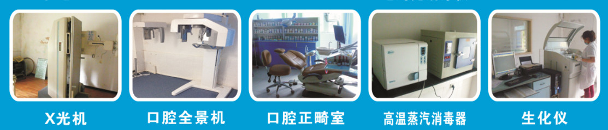
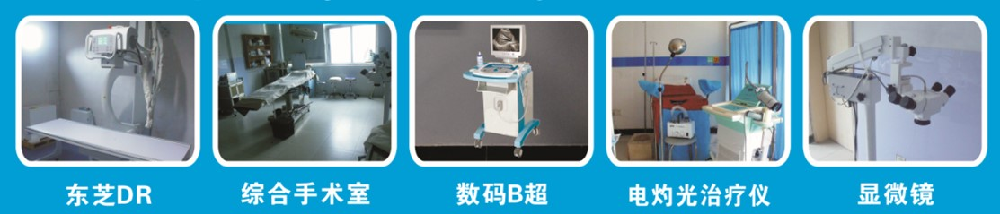

走近同和 让所有的人看得起病看好病
珠海同和医院是一所经政府注册的大型综合性医疗机构，是珠海西区斗门的一家断指
再植和手足外科的专科医院，被珠海市劳动局授予医疗保险定点单位和工伤保险定点医院
及多家保险公司认可的专业救治手足外科、骨伤外科专业医院，斗门区中小学定点体检医
院，是西安交通大学口腔医院临床教学实践基地，是珠海市企业单位定点医疗体检单位。
建筑面积达8000平方米，设有门诊和住院楼层。核准设置病床90张，下设主要特色专科为：
手足外科、创伤骨科中心、健康体检中心、妇儿产科中心以及内、外、中医、康复、小儿
外科、眼科、耳鼻喉科、口腔科、急诊科、麻醉科、X光、B超、心电、化验等二十余个科室。
医院为了做好企业员工预防保健工作，提高健康水平，是员工进厂前健康体检指定单位，
对体检人员选定健康检查项目，严格执行国家检测标准，配备珠海目前最先进的流动体检
车免费上门服务（批量上门体检肝功能、血常规、乙肝两对半等抽血采样、X光胸透、一
般体格检查）免费咨询和提出预防、保健常识宣传， 免费讲授常见急救知识及操作，为
员工提供平价医疗服务， 把同和医院当作贵公司的医疗室，为员工的健康提供最优质的服务。
我们将以医诚、技精、求实、平价承诺：让所有的人看得起病看好病。
走进社会 公益活动
- 免费为六十岁以上老人体检
- 特价为企事业员工健康体检
- 特价为中小学生健康体检
- 为工厂员工进行急救知识讲座

